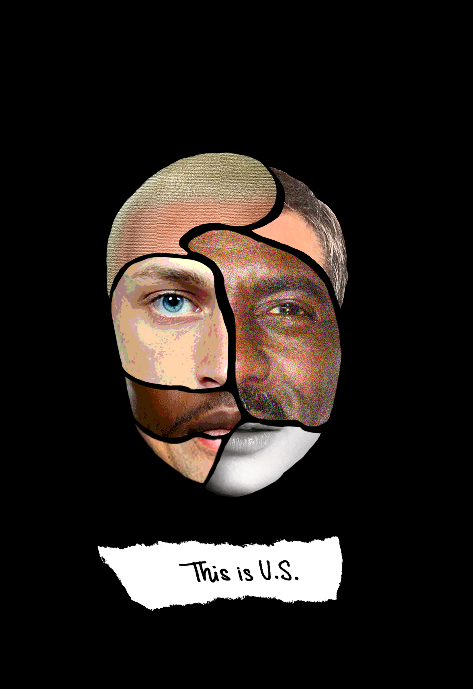
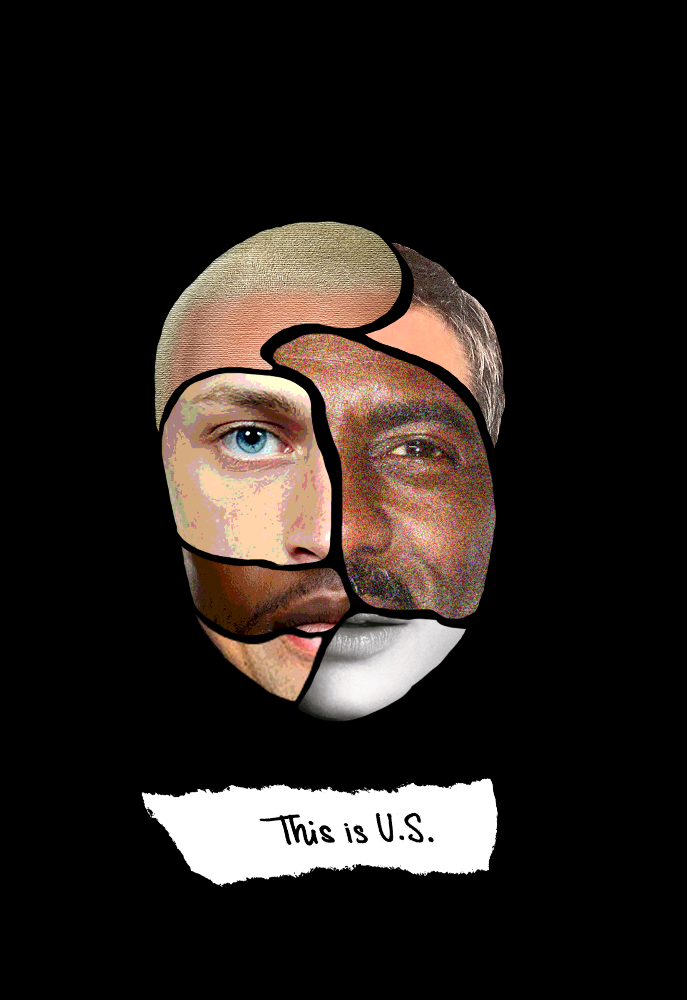

Collage Postcards
 

Collage Postcards on Diversity & Climate Change, 5.5" x 8"
Link to feature in Binghamton's LOCO Fesitval 2021This assignment revolved around the idea of collage and its processes, and students had to utilize Adobe Photoshop in order to create a series of digital collages in the form of unique postcards. The dimensions of the postcards could be 5.5 x 8 inches, or 6 x 11 inches. Students could decide to incorporate both sizes.
Every postcard had a specific theme, touching on current economical, political and/or social issues.
While working on the assignment, students were encouraged to think of how other elements - besides just found images on the web - might be utilized into their collages. Students could scan surfaces, and/or objects and use that in their work. Students could write or draw elements, scan them and also bring those into their work.
For my postcard on climate change, I decided to focus on showcasing the detrimental effect pollution and lack of care had on the Earth. I was inspired by the book/movie "The Lorax" by Dr.Seuss, which aims to show the impact of greediness on the environment. In the tale, a young boy is tasked with planting the last Truffula tree seed to save the disastered wasteland. The bright sunflower in my postcard alludes to this last "Truffula tree", which sits among a dark and gloomy environment, shimmering with hope. I added a quote from "The Lorax" onto my postcard, which I handwrote on lined paper and scanned into an image.
For my postcard on diversity, I wanted to evoke the message of diversity and inclusion of races in some way. I decided to take create a face shape out of multiple faces of different races, eye colors, hair colors, features, shapes, and so on. I cut out these images, placed varying effects on them, and pieced them together to form as one. I set the face onto a black background in order for it to stand out as the main element. This piece was later featured in Binghamton's LOCO Festival in May of 2021.
LOCO Festival 2021: ACNUR LOCO Festival is an educational project driven by the Spanish Committee of UNHCR (United Nations High Commissioner for Refugees) to raise students' awareness of refugees' situations and the importance of getting actively involved in the defense of Human Rights.
Given the diversity of Binghamton University and the region in which it is located, we are hosting the LOCO festival as a way to celebrate our multiculturality, multiethnicity, and diverse thinking. As events in the world continue to fuel the refugee crisis, this event seeks to increase cultural competence as a way to promote solidarity and cooperation.